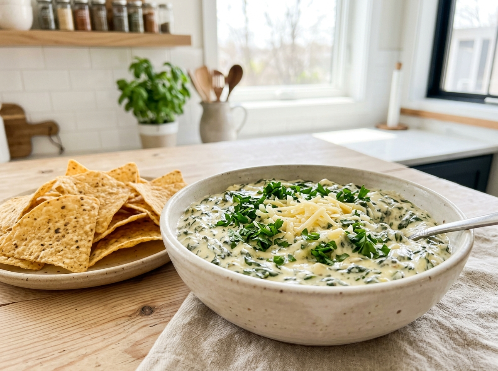
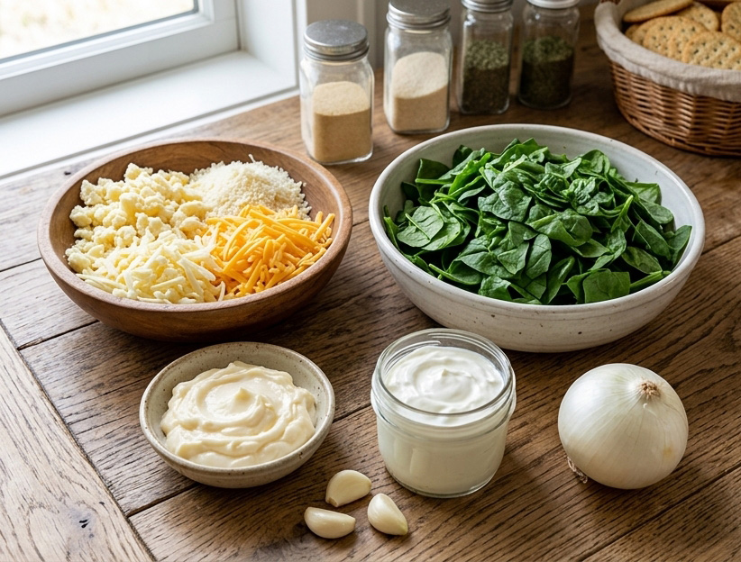

Este dip de espinacas es muy original y bastante ligero.


Simplemente hervimos las espinacas con poca agua, las dejamos enfriar y escurrimos la mayor cantidad de agua posible. La picamos pequeña y la mezclamos con el resto de los ingredientes.